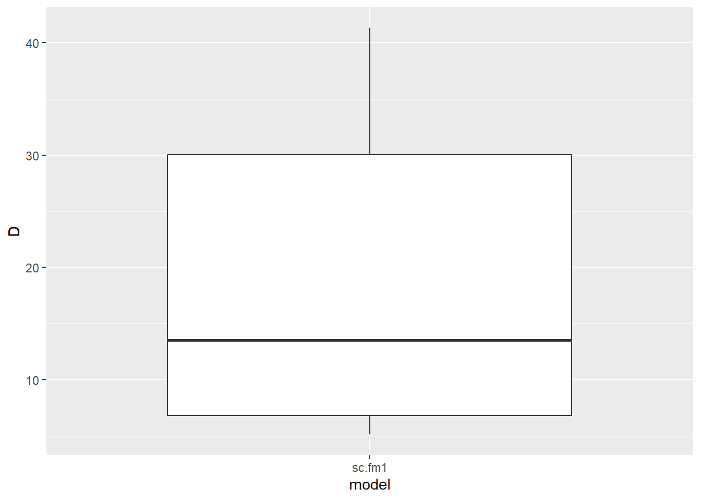
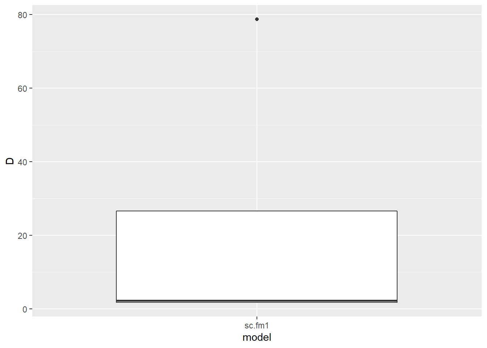
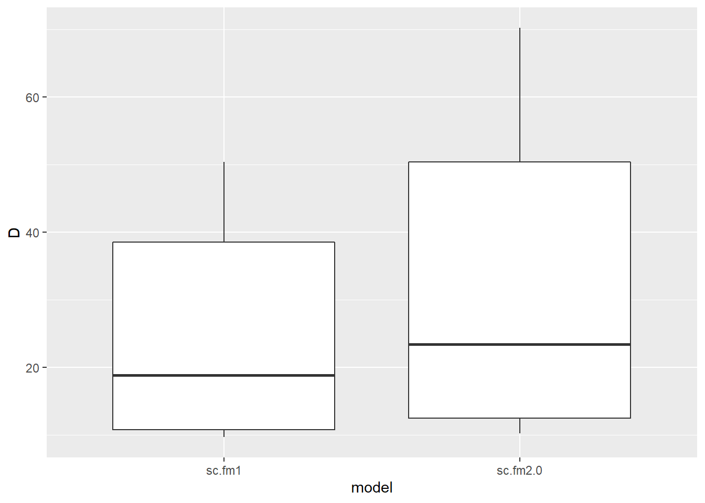
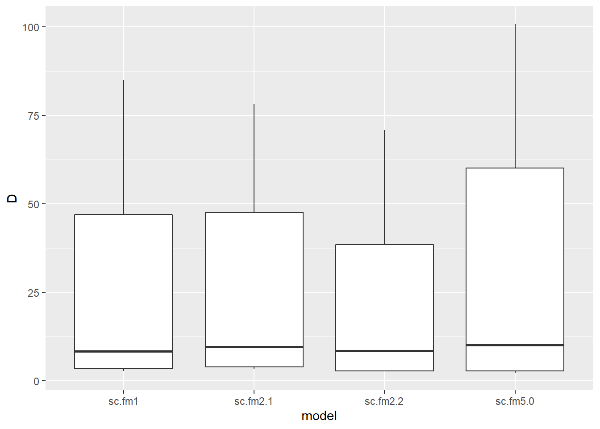

Models evaluated:
| model | description |
|---|---|
| sc.fm1 | dot model |
| sc.fm2.0 | lure |
| sc.fm2.1 | snow |
| sc.fm2.2 | temp |
| sc.fm2.3 | pass |
| sc.fm3.0 | lure + snow |
| sc.fm3.1 | lure + pass |
| sc.fm4.0 | lure + snow + temp |
| sc.fm4.2 | lure + snow + temp + pass |
| sc.fm5.0 | lure + snow + temp + pass + temp * snow |
| sc.fm5.1 | lure + snow + temp + pass + lure * snow |
model metadata:
| survey | n_sites | detections | rep_period | model_aggragate_reps | state_buffer | iterations | burnin | thin | sigma.mean | sigma.sd |
|---|---|---|---|---|---|---|---|---|---|---|
| SN east side cells | 19 | 46 | 7 days | 300 | 2.5 | 350000 | 20000 | 20 | 0.765 | 0.13 |
global models:
| model | covs | bayes_p_val | bayes_factor | revMCMC_constrained | revMCMC_unconstrained | revMCMC_noInteractions |
|---|---|---|---|---|---|---|
| sc.fm5.0 | lure | 0.45994 | 0.216 | 0.00406 | 0.0049091 | 0.0051515 |
| sc.fm5.0 | snow | 0.99399 | 0.076 | 0.00097 | 0.0006061 | 0.0013333 |
| sc.fm5.0 | temp | 0.94442 | 0.094 | 0.00212 | 0.0028485 | 0.0041212 |
| sc.fm5.0 | pass | 0.99952 | 33.049 | 0 | 0.1369091 | 0.0000000 |
| sc.fm5.0 | temp*snow | 0.54745 | 0.139 | 0 | 0.0043636 | NA |
| sc.fm5.1 | lure | 0.41709 | 0.263 | 0.00406 | 0.0049091 | 0.0051515 |
| sc.fm5.1 | snow | 0.94704 | 0.075 | 0.00097 | 0.0006061 | 0.0013333 |
| sc.fm5.1 | temp | 0.48484 | 0.153 | 0.00212 | 0.0028485 | 0.0041212 |
| sc.fm5.1 | pass | 0.99839 | 36.118 | 0 | 0.1369091 | 0.0000000 |
| sc.fm5.1 | lure*snow | 0.99996 | 0.110 | 6e-05 | 0.0007273 | NA |
single covariate models:
| model | covs | bayes_p_val | bayes_factor | revMCMC_constrained | revMCMC_unconstrained | revMCMC_noInteractions |
|---|---|---|---|---|---|---|
| sc.fm2.0 | lure | 0.17236 | 0.589 | 0.00406 | 0.0049091 | 0.0051515 |
| sc.fm2.1 | snow | 0.38879 | 0.170 | 0.00097 | 0.0006061 | 0.0013333 |
| sc.fm2.2 | temp | 0.1195 | 0.487 | 0.00212 | 0.0028485 | 0.0041212 |
| sc.fm2.3 | pass | 0.99988 | 34.540 | 0 | 0.1369091 | 0.0000000 |
All models: Covariates with p values below .11 (bayesian p, probability covariate is not null)
| model | covs | bayes_p_val | bayes_factor | revMCMC_constrained | revMCMC_unconstrained | revMCMC_noInteractions |
|---|---|---|---|---|---|---|
parameter support:
| level | support | covariates |
|---|---|---|
| good | pval and rev MCMC | |
| moderate | pval or rev MCMC | |
| poor | neither | lure - snow - temp - pass - snow*temp - lure*snow |
models with significant covariates:
waic:
| model | description | WAIC |
|---|---|---|
| sc.fm1 | dot model | 279.4672 |
Density per 100km, significant models:
## Warning: The `x` argument of `as_tibble.matrix()` must have column names if `.name_repair` is omitted as of tibble 2.0.0.
## Using compatibility `.name_repair`.
## This warning is displayed once every 8 hours.
## Call `lifecycle::last_warnings()` to see where this warning was generated.
top models density per 100sq km, significant covariates:
| species | model | covs | n_effective | mode | hdi_89pct_lower | hdi_89pct_upper |
|---|---|---|---|---|---|---|
| AmericanMarten | sc.fm1 | D | 277 | 13.511 | 5.1 | 41.35 |
notes:
model metadata:
| survey | n_sites | detections | rep_period | model_aggragate_reps | state_buffer | iterations | burnin | thin | sigma.mean | sigma.sd |
|---|---|---|---|---|---|---|---|---|---|---|
| SN east side cells | 19 | 6 | 7 days | 300 | 2.5 | 350000 | 20000 | 20 | 1.175 | 0.14 |
global models:
| model | covs | bayes_p_val | bayes_factor | revMCMC_constrained | revMCMC_unconstrained | revMCMC_noInteractions |
|---|---|---|---|---|---|---|
| sc.fm5.0 | lure | 0.59772 | 0.757 | 0.00358 | 0.0034545 | 0.0049091 |
| sc.fm5.0 | snow | 0.52387 | 0.619 | 0.00164 | 0.0027273 | 0.0043636 |
| sc.fm5.0 | temp | 0.2674 | 1.142 | 0.00073 | 0.0003636 | 0.0007273 |
| sc.fm5.0 | pass | 0.99888 | 35.700 | 0 | 0.1543030 | 0.0000000 |
| sc.fm5.0 | temp*snow | 0.59192 | 0.414 | 0 | 0.0017576 | NA |
| sc.fm5.1 | lure | 0.46539 | 1.025 | 0.00358 | 0.0034545 | 0.0049091 |
| sc.fm5.1 | snow | 0.30294 | 1.115 | 0.00164 | 0.0027273 | 0.0043636 |
| sc.fm5.1 | temp | 0.44471 | 0.728 | 0.00073 | 0.0003636 | 0.0007273 |
| sc.fm5.1 | pass | 0.99999 | 34.591 | 0 | 0.1543030 | 0.0000000 |
| sc.fm5.1 | lure*snow | 0.51301 | 0.619 | 0.00012 | 0.0012727 | NA |
single covariate models:
| model | covs | bayes_p_val | bayes_factor | revMCMC_constrained | revMCMC_unconstrained | revMCMC_noInteractions |
|---|---|---|---|---|---|---|
| sc.fm2.0 | lure | 0.51599 | 0.819 | 0.00358 | 0.0034545 | 0.0049091 |
| sc.fm2.1 | snow | 0.52225 | 0.425 | 0.00164 | 0.0027273 | 0.0043636 |
| sc.fm2.2 | temp | 0.99962 | 0.146 | 0.00073 | 0.0003636 | 0.0007273 |
| sc.fm2.3 | pass | 0.99984 | 29.716 | 0 | 0.1543030 | 0.0000000 |
All models: Covariates with p values below .11 (bayesian p, probability covariate is not null)
| model | covs | bayes_p_val | bayes_factor | revMCMC_constrained | revMCMC_unconstrained | revMCMC_noInteractions |
|---|---|---|---|---|---|---|
parameter support:
| level | support | covariates |
|---|---|---|
| good | pval and rev MCMC | |
| moderate | pval or rev MCMC | |
| poor | neither | lure - snow - temp - pass - snow*temp - lure*snow |
models with significant covariates:
waic:
| model | description | WAIC |
|---|---|---|
| sc.fm1 | dot model | 60.73971 |
Density per 100km, significant models:

top models density per 100sq km, significant covariates:
| species | model | covs | n_effective | mode | hdi_89pct_lower | hdi_89pct_upper |
|---|---|---|---|---|---|---|
| Bobcat | sc.fm1 | D | 52 | 2.191 | 1.7 | 78.73 |
notes:
model metadata:
| survey | n_sites | detections | rep_period | model_aggragate_reps | state_buffer | iterations | burnin | thin | sigma.mean | sigma.sd |
|---|---|---|---|---|---|---|---|---|---|---|
| SN east side cells | 19 | 218 | 7 days | 300 | 2.5 | 350000 | 20000 | 20 | 0.865 | 0.205 |
global models:
| model | covs | bayes_p_val | bayes_factor | revMCMC_constrained | revMCMC_unconstrained | revMCMC_noInteractions |
|---|---|---|---|---|---|---|
| sc.fm5.0 | lure | 0 | 75.422 | 0.55994 | 0.5954545 | 0.6605455 |
| sc.fm5.0 | snow | 0 | 59.329 | 0.03103 | 0.0418788 | 0.1226667 |
| sc.fm5.0 | temp | 0.00116 | 30.901 | 0.00933 | 0.0177576 | 0.0981212 |
| sc.fm5.0 | pass | 0.99292 | 30.913 | 0.00576 | 0.2321212 | 0.0729697 |
| sc.fm5.0 | temp*snow | 0.8335 | 0.036 | 0 | 0.0006667 | NA |
| sc.fm5.1 | lure | 0.00091 | 48.959 | 0.55994 | 0.5954545 | 0.6605455 |
| sc.fm5.1 | snow | 0 | 47.519 | 0.03103 | 0.0418788 | 0.1226667 |
| sc.fm5.1 | temp | 0 | 19.952 | 0.00933 | 0.0177576 | 0.0981212 |
| sc.fm5.1 | pass | 0.99996 | 33.949 | 0.00576 | 0.2321212 | 0.0729697 |
| sc.fm5.1 | lure*snow | 0.29938 | 0.228 | 0.0137 | 0.0110909 | NA |
single covariate models:
| model | covs | bayes_p_val | bayes_factor | revMCMC_constrained | revMCMC_unconstrained | revMCMC_noInteractions |
|---|---|---|---|---|---|---|
| sc.fm2.0 | lure | 0 | 328.643 | 0.55994 | 0.5954545 | 0.6605455 |
| sc.fm2.1 | snow | 0.00309 | 7.527 | 0.03103 | 0.0418788 | 0.1226667 |
| sc.fm2.2 | temp | 0.9992 | 0.023 | 0.00933 | 0.0177576 | 0.0981212 |
| sc.fm2.3 | pass | 0.99613 | 34.153 | 0.00576 | 0.2321212 | 0.0729697 |
All models: Covariates with p values below .11 (bayesian p, probability covariate is not null)
| model | covs | bayes_p_val | bayes_factor | revMCMC_constrained | revMCMC_unconstrained | revMCMC_noInteractions |
|---|---|---|---|---|---|---|
| sc.fm2.0 | lure | 0 | 328.643 | 0.55994 | 0.5954545 | 0.6605455 |
| sc.fm3.1 | lure | 0 | 50.022 | 0.55994 | 0.5954545 | 0.6605455 |
| sc.fm4.0 | snow | 0 | 487.710 | 0.03103 | 0.0418788 | 0.1226667 |
| sc.fm4.0 | temp | 0 | 34.157 | 0.00933 | 0.0177576 | 0.0981212 |
| sc.fm4.2 | snow | 0 | 201.394 | 0.03103 | 0.0418788 | 0.1226667 |
| sc.fm5.0 | lure | 0 | 75.422 | 0.55994 | 0.5954545 | 0.6605455 |
| sc.fm5.0 | snow | 0 | 59.329 | 0.03103 | 0.0418788 | 0.1226667 |
| sc.fm5.1 | snow | 0 | 47.519 | 0.03103 | 0.0418788 | 0.1226667 |
| sc.fm5.1 | temp | 0 | 19.952 | 0.00933 | 0.0177576 | 0.0981212 |
| sc.fm4.2 | temp | 0.00061 | 28.596 | 0.00933 | 0.0177576 | 0.0981212 |
| sc.fm5.1 | lure | 0.00091 | 48.959 | 0.55994 | 0.5954545 | 0.6605455 |
| sc.fm5.0 | temp | 0.00116 | 30.901 | 0.00933 | 0.0177576 | 0.0981212 |
| sc.fm4.2 | lure | 0.00214 | 28.559 | 0.55994 | 0.5954545 | 0.6605455 |
| sc.fm3.0 | lure | 0.00285 | 19.847 | 0.55994 | 0.5954545 | 0.6605455 |
| sc.fm4.0 | lure | 0.0029 | 25.277 | 0.55994 | 0.5954545 | 0.6605455 |
| sc.fm2.1 | snow | 0.00309 | 7.527 | 0.03103 | 0.0418788 | 0.1226667 |
| sc.fm3.0 | snow | 0.03125 | 0.913 | 0.03103 | 0.0418788 | 0.1226667 |
parameter support:
| level | support | covariates |
|---|---|---|
| good | pval and rev MCMC | lure |
| moderate | pval or rev MCMC | |
| poor | neither | snow - temp - pass - snow*temp - lure*snow |
models with significant covariates:
waic:
| model | description | WAIC |
|---|---|---|
| sc.fm2.0 | lure | 794.4962 |
| sc.fm1 | dot model | 808.2681 |
Density per 100km, significant models:

top models density per 100sq km, significant covariates:
| species | model | covs | n_effective | mode | hdi_89pct_lower | hdi_89pct_upper |
|---|---|---|---|---|---|---|
| Coyote | sc.fm2.0 | D | 144 | 23.352 | 10.20 | 70.23 |
| Coyote | sc.fm2.0 | lure | 16500 | -0.588 | -0.85 | -0.31 |
notes:
poor support for snow, temp
model metadata:
| survey | n_sites | detections | rep_period | model_aggragate_reps | state_buffer | iterations | burnin | thin | sigma.mean | sigma.sd |
|---|---|---|---|---|---|---|---|---|---|---|
| SN east side cells | 19 | 31 | 7 days | 300 | 2.5 | 350000 | 20000 | 20 | 0.322 | 0.094 |
global models:
| model | covs | bayes_p_val | bayes_factor | revMCMC_constrained | revMCMC_unconstrained | revMCMC_noInteractions |
|---|---|---|---|---|---|---|
| sc.fm5.0 | lure | 0.97036 | 0.088 | 0.00085 | 0.0013939 | 0.0014545 |
| sc.fm5.0 | snow | 0.20831 | 0.748 | 0.03794 | 0.0378788 | 0.0563030 |
| sc.fm5.0 | temp | 0.22315 | 0.586 | 0.00091 | 0.0016364 | 0.0021818 |
| sc.fm5.0 | pass | 0.9924 | 34.508 | 0 | 0.1741212 | 0.0006061 |
| sc.fm5.0 | temp*snow | 0.09116 | 1.661 | 0 | 0.1847879 | NA |
| sc.fm5.1 | lure | 0.87781 | 0.089 | 0.00085 | 0.0013939 | 0.0014545 |
| sc.fm5.1 | snow | 0 | 60.798 | 0.03794 | 0.0378788 | 0.0563030 |
| sc.fm5.1 | temp | 0.24412 | 0.572 | 0.00091 | 0.0016364 | 0.0021818 |
| sc.fm5.1 | pass | 0.99917 | 34.523 | 0 | 0.1741212 | 0.0006061 |
| sc.fm5.1 | lure*snow | 0.22799 | 1.153 | 0 | 0.0027879 | NA |
single covariate models:
| model | covs | bayes_p_val | bayes_factor | revMCMC_constrained | revMCMC_unconstrained | revMCMC_noInteractions |
|---|---|---|---|---|---|---|
| sc.fm2.0 | lure | 0.59936 | 0.163 | 0.00085 | 0.0013939 | 0.0014545 |
| sc.fm2.1 | snow | 0.01558 | 7.486 | 0.03794 | 0.0378788 | 0.0563030 |
| sc.fm2.2 | temp | 0.56219 | 0.130 | 0.00091 | 0.0016364 | 0.0021818 |
| sc.fm2.3 | pass | 0.99786 | 32.737 | 0 | 0.1741212 | 0.0006061 |
All models: Covariates with p values below .11 (bayesian p, probability covariate is not null)
| model | covs | bayes_p_val | bayes_factor | revMCMC_constrained | revMCMC_unconstrained | revMCMC_noInteractions |
|---|---|---|---|---|---|---|
| sc.fm5.1 | snow | 0 | 60.798 | 0.03794 | 0.0378788 | 0.056303 |
| sc.fm4.0 | snow | 0.00721 | 16.882 | 0.03794 | 0.0378788 | 0.056303 |
| sc.fm4.2 | snow | 0.00989 | 22.859 | 0.03794 | 0.0378788 | 0.056303 |
| sc.fm2.1 | snow | 0.01558 | 7.486 | 0.03794 | 0.0378788 | 0.056303 |
| sc.fm3.0 | snow | 0.03221 | 3.231 | 0.03794 | 0.0378788 | 0.056303 |
| sc.fm5.0 | temp*snow | 0.09116 | 1.661 | 0 | 0.1847879 | NA |
parameter support:
| level | support | covariates |
|---|---|---|
| good | pval and rev MCMC | |
| moderate | pval or rev MCMC | snow - temp - snow*temp |
| poor | neither | lure - pass- lure*snow |
models with significant covariates:
waic:
| model | description | WAIC |
|---|---|---|
| sc.fm2.1 | snow | 155.6620 |
| sc.fm5.0 | lure + snow + temp + pass + temp * snow | 156.0913 |
| sc.fm1 | dot model | 162.3660 |
| sc.fm2.2 | temp | 163.7429 |
Density per 100km, significant models:

top models density per 100sq km, significant covariates:
| species | model | covs | n_effective | mode | hdi_89pct_lower | hdi_89pct_upper |
|---|---|---|---|---|---|---|
| WhiteTailedJackrabbit | sc.fm2.1 | D | 102 | 9.641 | 3.40 | 78.16 |
| WhiteTailedJackrabbit | sc.fm2.1 | snow | 16500 | 0.713 | 0.28 | 1.24 |
notes:
moderate support for snow*temp, have a look,
snow is the top model, so mabey no interaction